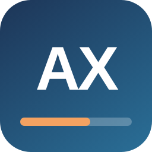
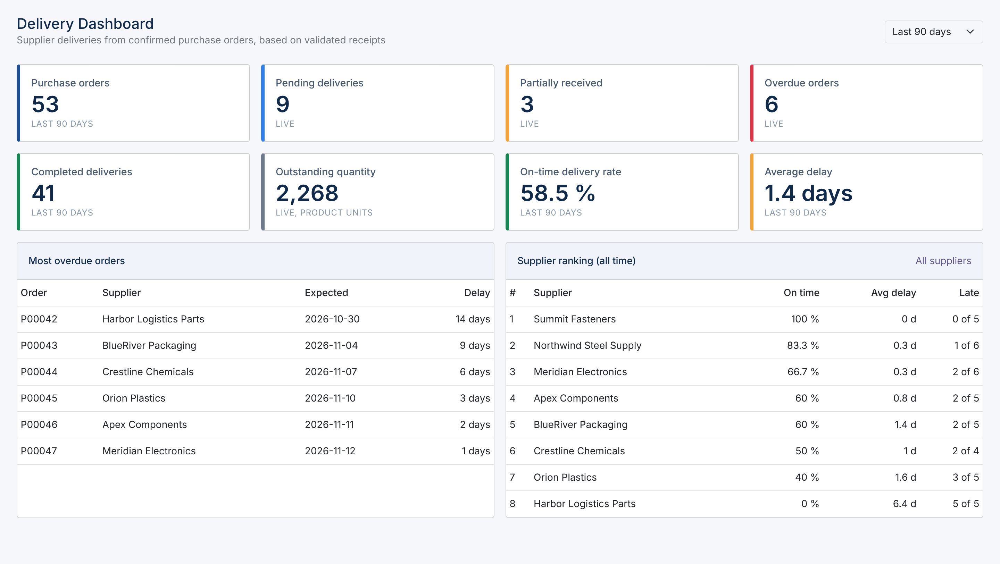
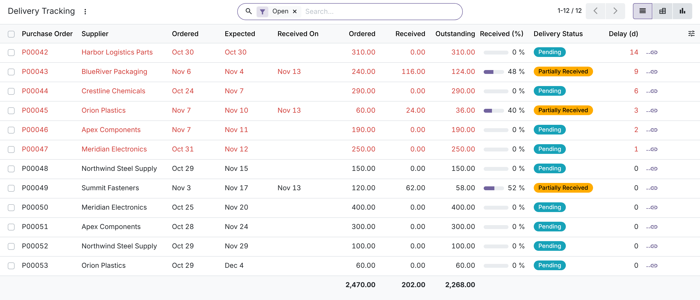
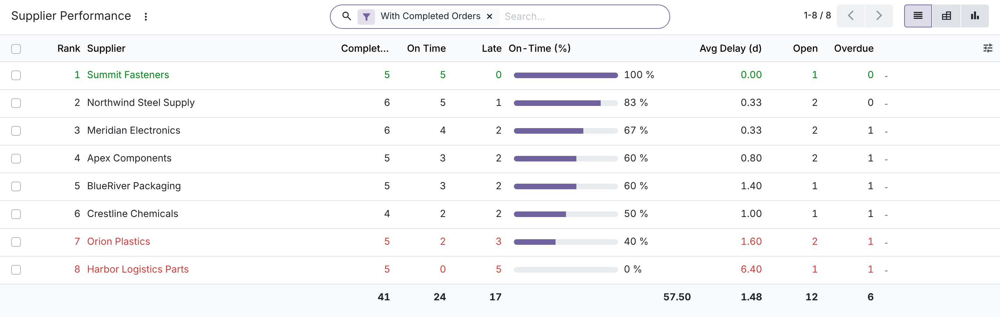
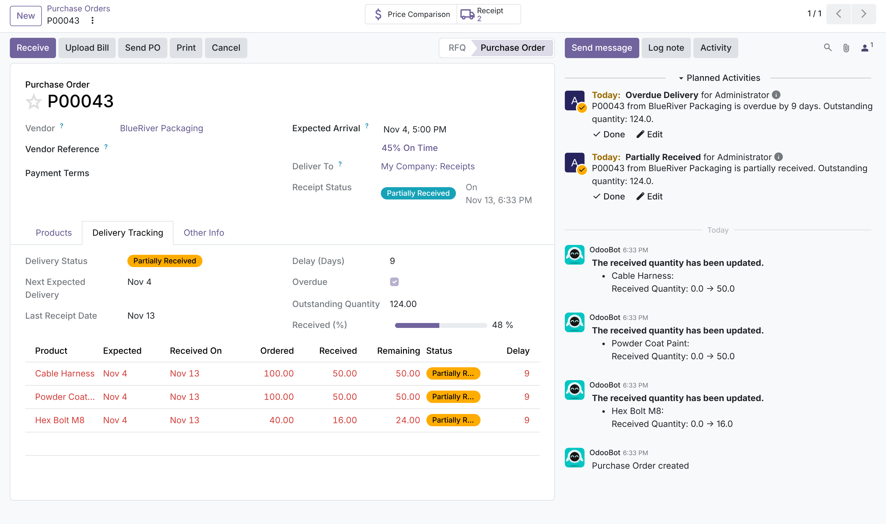
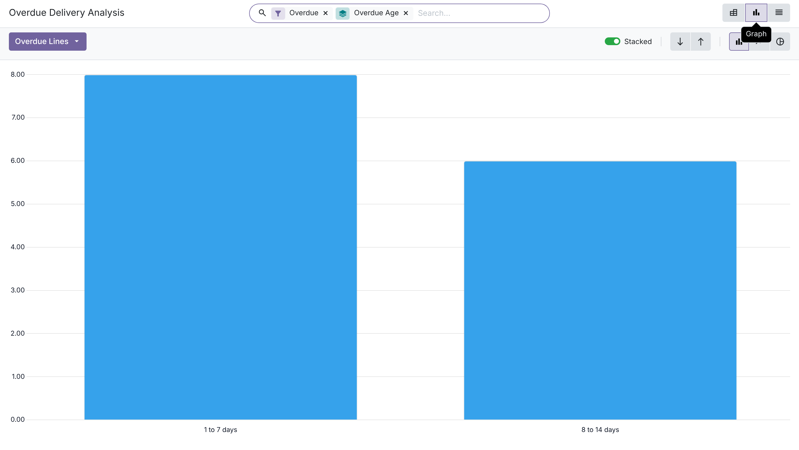

AXSync | Odoo 20.0 | Purchase
Track expected versus actual receipts for every purchase order, measure supplier on-time performance and alert buyers before and after a delivery is due.
Value in one line: it reads the receipts you already validate in Odoo Inventory and turns them into delivery status, delay in days and a supplier ranking. It does not change how you purchase or receive.
Odoo 20.0 Community Purchase and Inventory No extra Python libraries

The Delivery Dashboard, captured from the module running on Odoo 20.0 with sample data.
Odoo records every purchase order and every receipt. Answering "is this supplier late, and how often?" still means comparing dates across several documents.
A supplier is chased only after production or a customer order is already waiting.
The balance of a backorder sits in another document and is rarely followed.
Expected and actual receipt dates are on different records, so delay in days is never calculated.
Without on-time figures, supplier reviews rely on memory and complaints.
After a return to the supplier it is not obvious that quantity is still missing.
Buyers have to remember to check due dates and partial receipts.
The module adds a Delivery Tracker menu under Purchase. Every report reads live data from your confirmed purchase orders and validated receipts. Nothing is copied and no data is duplicated.
Confirmed Purchase Orders → Validated Receipts → Delivery Status and Delay → Supplier Performance → Alerts
| Problem | How the module addresses it |
|---|---|
| Late deliveries | Overdue flag, delay in days and an overdue age analysis, live on the dashboard. |
| Partial receipts | Ordered, received, remaining and outstanding quantity per line and per order. |
| Delay measurement | Expected day compared with the last validated receipt day. |
| Supplier reliability | On-time percentage, average delay, late deliveries and a ranking per supplier. |
| Returns | Validated returns reduce the received quantity, so the missing quantity stays visible. |
| Follow-up | Buyers get an activity for upcoming, overdue and partially received deliveries, once per situation. |
Eight KPI tiles: purchase orders, pending deliveries, partially received orders, overdue orders, completed deliveries, outstanding quantity, on-time delivery rate and average delay. Purchase orders, completed deliveries, on-time rate and average delay follow the period you choose (30, 90, 180 days, 12 months or all time). Pending, partially received, overdue and outstanding quantity are always live. Every tile opens the matching list. Two tables show the most overdue orders and the supplier ranking, and each row opens the order or the supplier's deliveries.
One row per confirmed purchase order and one row per purchase line, with expected delivery day, last receipt day, ordered, received and remaining quantity, delivery status (pending, partially received, fully received, closed short) and delay in days. Available as list, pivot and graph with filters such as open, overdue, delivered late and expected in the next 7 days.
Received quantity comes from validated stock receipts through the native received quantity of the purchase line. Partial receipts, several receipts for one line, returns to the supplier and units of measure are handled by Odoo itself, and the module reads the result. Outstanding quantities are converted to the unit of the product so they can be added up.
For every supplier and company: confirmed orders, completed orders, on-time orders, late deliveries, on-time percentage, average delay, average days late, worst delay, open and overdue orders. Suppliers with at least one completed order are ranked by on-time percentage, then average delay.
A daily scheduled action creates a to-do activity for the buyer of the order when a delivery is upcoming, overdue or partially received. A log keeps what was sent, so the same situation is never notified twice. Alert types and the upcoming window are configured in the Purchase settings, and a button runs the alerts on demand.
A Delivery Tracking tab on the purchase order shows the status, next expected date, last receipt date, delay and each line. The purchase order list has an optional Delivery column. The supplier form has an On-Time Delivery button.
Overdue lines grouped by age (1 to 7, 8 to 14, 15 to 30 and over 30 days), by supplier, product or buyer, in list, pivot and graph.
Every report has search fields, ready-made filters, group-by options and totals. Use the standard Export action on lists and Download xlsx on pivots. Reports respect multi-company access rules.
All screenshots come from the module running on Odoo 20.0 with sample purchase data.




Overdue and upcoming deliveries are listed before they become a production problem.
On-time percentage and average delay replace opinions.
Backorders, partial receipts and returns keep the missing quantity visible.
No spreadsheet of expected and actual dates to maintain.
Activities arrive in the buyer's to-do list, once per situation.
Built on standard Purchase and Inventory. Nothing changes for your receiving team.
| Odoo version | 20.0 only |
|---|---|
| Community | Compatible. Tested on the Odoo 20.0 Community source. |
| Enterprise | Not tested. The module uses only standard Purchase and Inventory models, but no Enterprise test run has been performed. |
| Required Odoo apps | Purchase and Inventory. |
| Python libraries | None beyond Odoo itself. |
| Multi-company | Supported through record rules. Covered by an automated test. |
| Data and services | No external services. The module stores only a log of the alerts it sent. |
Yes. It depends on the Purchase and Inventory apps and was tested on Odoo 20.0 Community.
It uses only standard models and is expected to work, but it has not been tested on Enterprise.
From validated stock receipts, through the received quantity Odoo keeps on the purchase line. Partial receipts, multiple receipts, returns and units of measure are handled there.
A completed order is on time when every line was last received on or before its expected day.
No. Each alert type is sent once for the same trigger. A new partial receipt or a new due date is a new situation.
No. It adds reporting models, views and menus, and a few fields on purchase orders and partners.
Yes. Each report is restricted to the companies the user may access.
Yes. Use the standard Odoo export on lists and Download xlsx on pivots.
Email hunain@axsync.com or use the Contact the Author option on this Odoo Apps Store page.
Published by AXSync
Website: www.axsync.com
Support email: hunain@axsync.com
Please include your Odoo version, the module version, and what you expected to see. Screenshots help.
This module is published by AXSync and is not an official Odoo product. Odoo is a trademark of Odoo S.A.
Install AXSync Smart Purchase & Supplier Delivery Tracker and manage deliveries, partial receipts and supplier performance from one place.
www.axsync.com